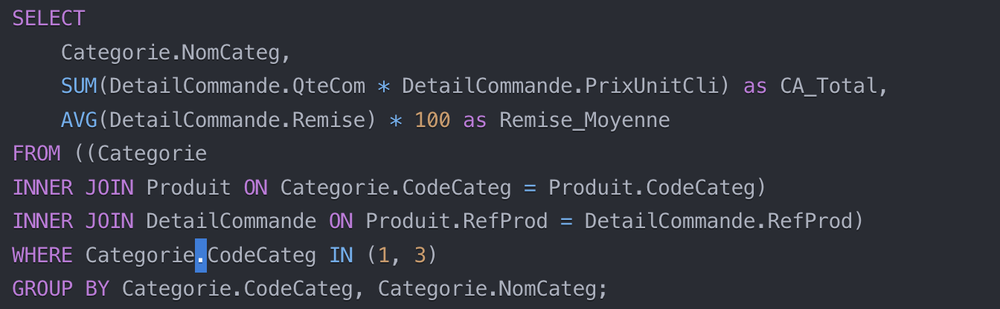

Mission 3
Cette mission s'est concentrée sur l'analyse des données KDou à travers des requêtes SQL complexes, organisées autour de quatre thèmes principaux : desserts et boissons, l'offre KDou, provenance des produits, et la clientèle.
1. Desserts et Boissons
Indicateur 1.1 : Analyse des ventes par catégorie
Énoncé : Calculer le chiffre d'affaires total des desserts et boissons avec indication du pourcentage de remise moyen.
Résultat :
| Catégorie | CA Total | Remise Moyenne |
|---|---|---|
| Boissons | 360 309,75 € | 15.2% |
| Desserts | 207 326,70 € | 12.8% |
Indicateur 1.2 : Analyse des prix boissons/desserts par pays
-- Code SQL pour analyser les prix des boissons et desserts par pays
SELECT
Fournisseur.Pays,
Categorie.NomCateg,
AVG(Produit.PrixUnit) as Prix_Moyen
FROM Produit
INNER JOIN Fournisseur ON Produit.NoFour = Fournisseur.NoFour
INNER JOIN Categorie ON Produit.CodeCateg = Categorie.CodeCateg
WHERE Categorie.CodeCateg IN (1, 3)
GROUP BY Fournisseur.Pays, Categorie.NomCateg;